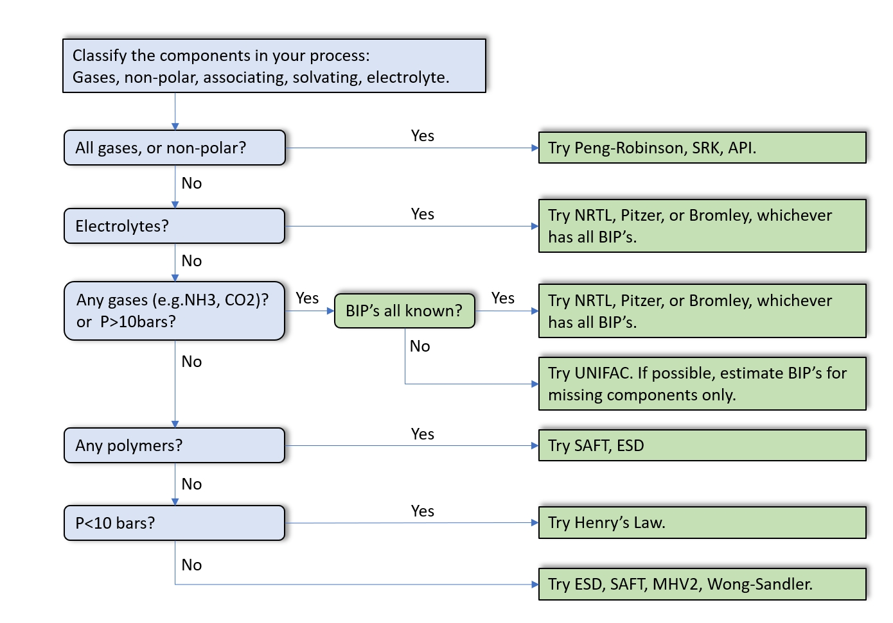

Simulation Program에서의 상태방정식의 선정은 정확한 선정방법이 없으며, 실험 Data나 운전 Data등을 이용하여 가장 근접한 Thermodynamic
Package를 선정하여 Simulation 하는 방법이 가장 정확한 방법이다.
따라서 정확한 Simulation을 위해서는 Simulatior의 경험에 의한 Data나 실험 Data등을 이용하여 가장 근접한 Thermodynamic Package를 선정하는
것이 가장 정확한 Simulation을 하는 방법이다.
다음 표는 DWSIM 및 Hysis 프로그램을 이용하여 Sumulation 할 경우, 실험 Data나 운전데이터 등이 부족할 경우 일반적으로 Thermodynamic
Package를 초기
선정하기
위한 Guide이다.
| Components | Thermodynamics |
| Ideal gas/solution | Raoult's law |
| All gas or non ploar | Peng-Robinson, SRK |
| Electrolytes | NRTL, Pitzer |
| Polar gases | NRTL, UNIQUAC |
| Polar compounds | UNIFAC |
| Polymers | SAFT |

주) 위의 Thermodynamic Package Selection 선정 Guide는 참고용으로 사용하시고 반드시 운전 Data 및 실험 Data와 확인하여야 합니다.